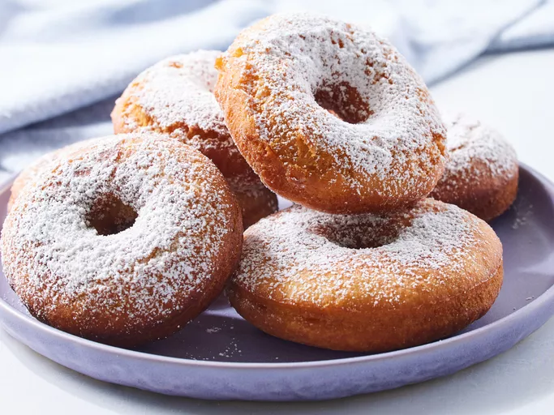

Donut recipe

This easy donut recipe is made from ingredients you probably already have. My 3-year-old loves these donuts because he can have them whenever he wants since there's hardly any waiting time.
Very easy made Donuts. You can also add any toppings or glazing you'd like.Enjoy!
Ingredients
- 3/8 cup of milk
- 2 tablespoons of white vinegar
- 1 egg
- 1/2 cup of white sugar
- 2 tablespoons shortening
- 1/2 teaspoon of vanilla extract
- 2 cups sifted all-purpose flour
- 1/2 teaspoon of baking soda
- 1/4 teaspoon of salt
- 1 quart oil for deep frying
- 1/2 cup confectioners' sugar for dusting
- Stir together milk and vinegar; let stand for a few minutes until thick.
- Cream together sugar and shortening in a mixing bowl until smooth.
- Beat in egg and vanilla until well-blended.
- Sift together flour, baking soda, and salt in a separate bowl; stir into sugar mixture alternating with milk mixture.
- Roll dough out on a floured surface to 1/3-inch thickness.
- Cut into donuts using a donut cutter. Let stand for about 10 minutes.
- Heat oil in a large, deep skillet to 375 degrees F (190 degrees C). Fry donuts in hot oil in batches until golden, turning over once, about 1 to 2 minutes per side.
- Drain on paper towels.
- Dust with confectioners' sugar while they are still warm and serve.